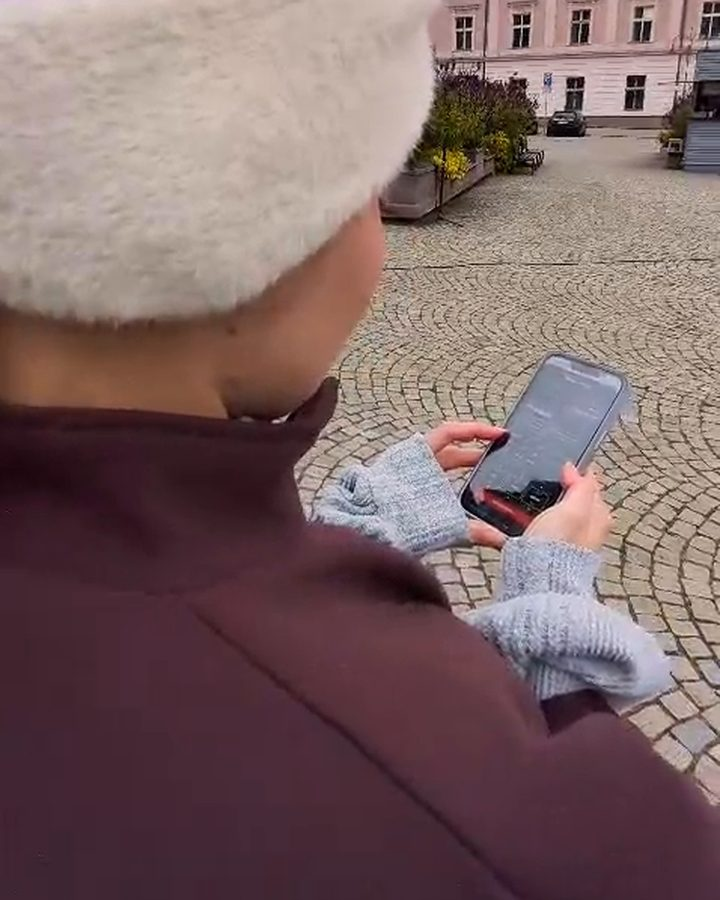
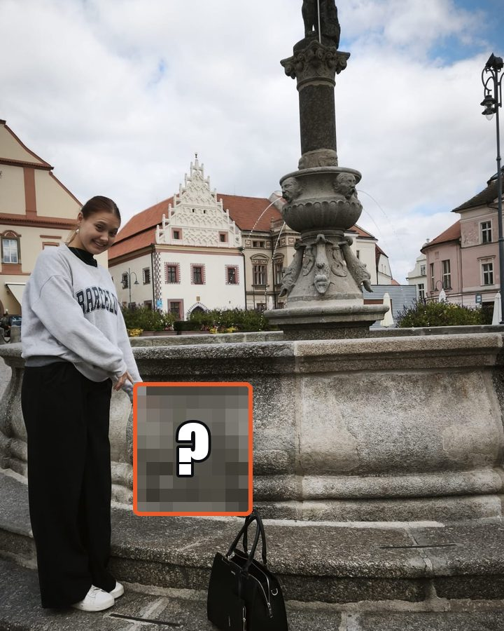
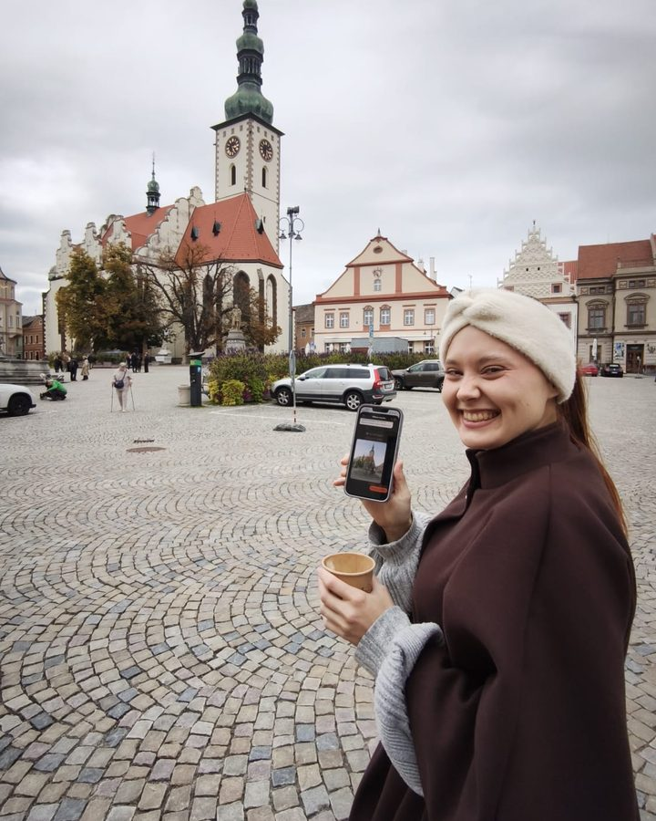
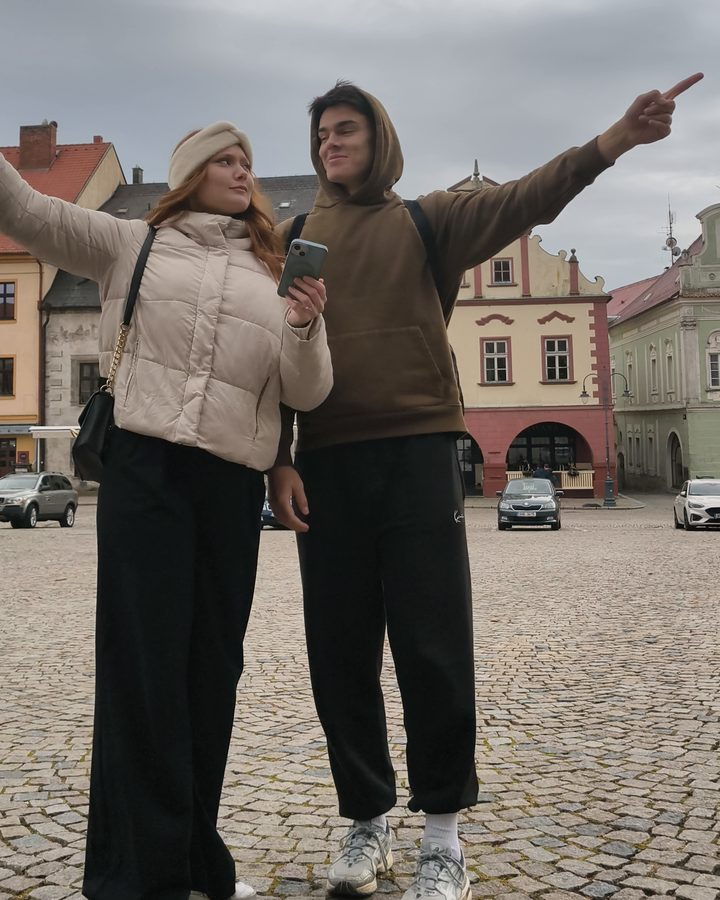
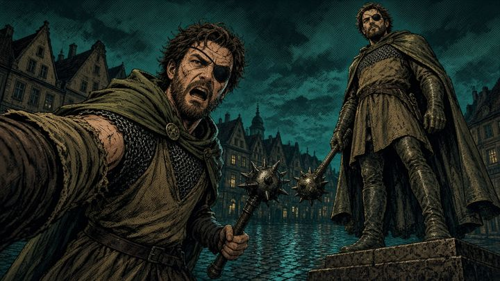
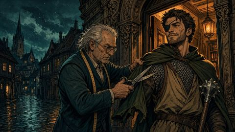
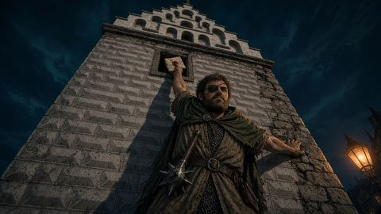
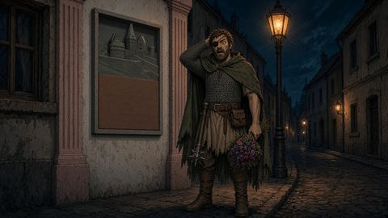
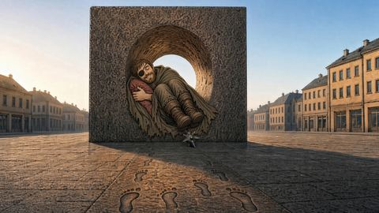
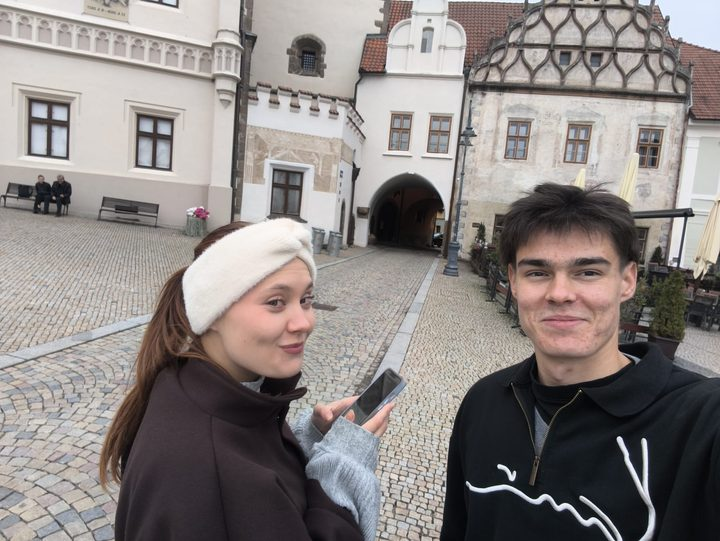

Tábor · venkovní úniková hra
Žižka se v poledne žení.
A je pryč.
Najděte ho. Venkovní únikovka v ulicích Tábora, mobil vás vede.
Hrát- 1–6 lidí
- jeden mobil
- 9 míst
- 60–90 min
- bez aplikace
- namluvené, nemusíte číst
Jak to funguje



✓ VYŘEŠENO+ groše do kasy
DO 12:00jinak popravaposuňte prstem →
Takhle hra vypadá
Žižka vám celou noc posílá fotky a hlasovky. A vy rozhodujete.

Co jí odpovíte?
Takhle se to hraje
Co v noci vyváděl?
Každá hádanka odemkne kus jeho noci.




Pro koho?
- 🎉Parta
- 💍Rozlučka
- ❤️Rande
- 🧭Výlet do Tábora
- 🕵️Klidně i sám
Hrát
za celou partu · zaváděcí cena
První party hrají zdarma. Na konci jen tři kliky v dotazníku.
Napište nám a dáme vědět, až hra vyjde.
- Hrajete hned, bez aplikace
- Kdykoli, bez rezervace
Hra je venkovní. Hrajete na vlastní odpovědnost, podle pravidel hry.
Start: kdekoli na Žižkově náměstí (Tábor)
Otázky
Nejsem z Tábora. Zvládnu to?
Ano. Chat vás provede od místa k místu. Start je kdekoli na Žižkově náměstí v centru Starého Města, asi 10 minut pěšky od zastávky Křižíkovo náměstí.
Co když se zasekneme?
Na každém místě jsou nápovědy. Ta poslední řekne řešení.
Kolik nás může být?
1–6 lidí na jeden mobil. Větší parta se rozdělí na dvě a soutěží.
Co když prší?
Hraje se venku. Když leje, přerušte to. Hra si pamatuje, kde jste.
Dá se hrát po tmě?
Ano. Centrum je osvětlené a všechno najdete i po setmění.
Bude signál?
Otevřete hru doma na wifi (asi 4 MB). Pak jde dohrát i bez signálu.
Můžou hrát děti?
Hádanky zvládnou. Jenže Žižka je po rozlučce a nemluví jako v čítance. Proto od 15 let.
Je trasa bezbariérová?
Ano, na trase nejsou schody. Počítejte jen s dlažbou.
Co když hra nefunguje?
Napište nám na e-mail, co se stalo. Opravíme to, nebo vám vrátíme peníze.
Jak dlouho přístup platí?
12 měsíců od zaplacení, jedna hra pro jednu partu.
Je tu žebříček?
Nejlepší roty zveřejňujeme na Instagramu. Pošlete nám kartu z konce hry.

Kdo za tím stojí
Čau, my jsme Vasi a Terka. V Táboře nám chyběla aktivita, u které si odpočinete, nesedíte doma a trochu se hýbete. Zapojíte hlavu a zasmějete se. Vyrazit můžete sami, ve dvou nebo s partou.
Proč zrovna únikovka?
Únikovky mě baví od malička. Mám rád chvíli, kdy si nad něčím lámu hlavu, a pak mi to docvakne. Na chvíli přitom vypnu od skutečných starostí. Tahle dětská radost z vyřešeného úkolu mi v dospělém životě chyběla, tak jsem ji postavil přímo do ulic Tábora. Proto jsou některé hádanky jednoduché a vtipné. Vasi